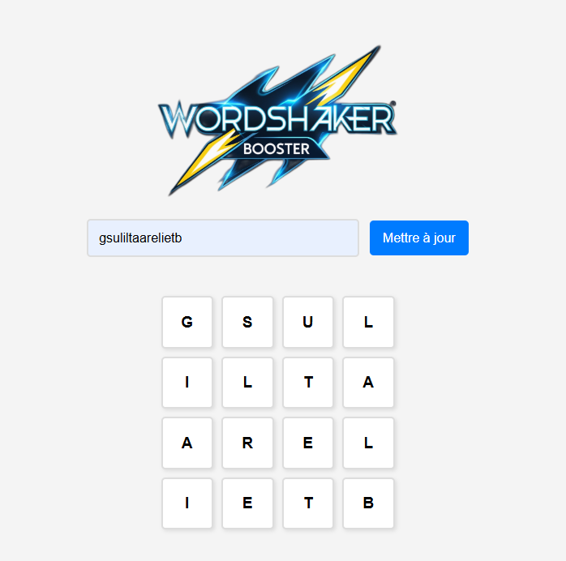
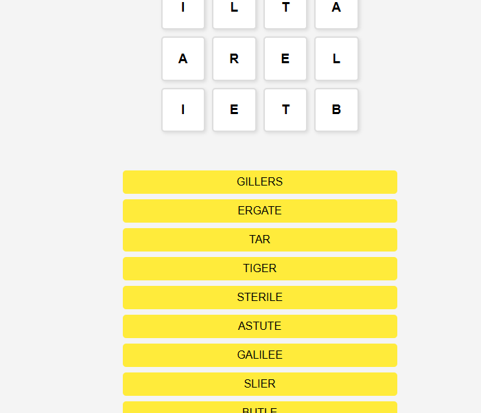

projet 07/07
WordShaker Booster

Outil qui liste tous les mots valides pris en charge par la grille de Word Shaker, pour optimiser son score et maximiser les points en jeu.
Fonctionnalités principales
- Recherche de tous les mots valides possibles selon la grille
- Optimisation du score pour maximiser les points
- Interface simple pour sélectionner et comparer les mots
- Mise à jour rapide des résultats selon les nouvelles lettres
Captures d’écran

